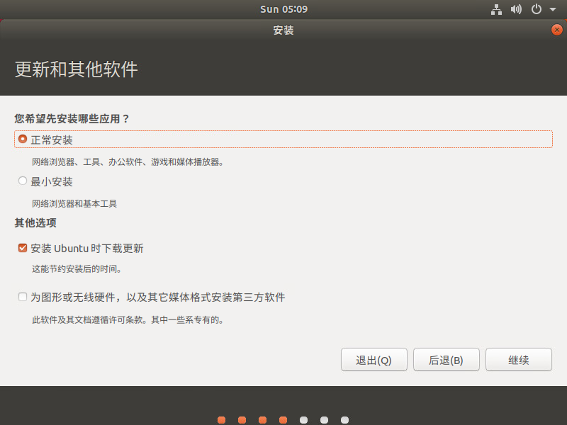
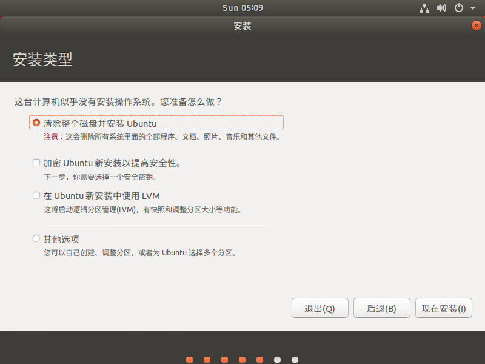
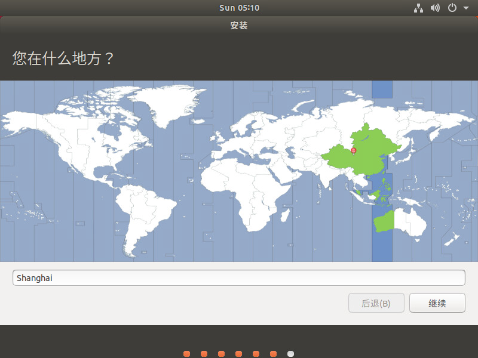
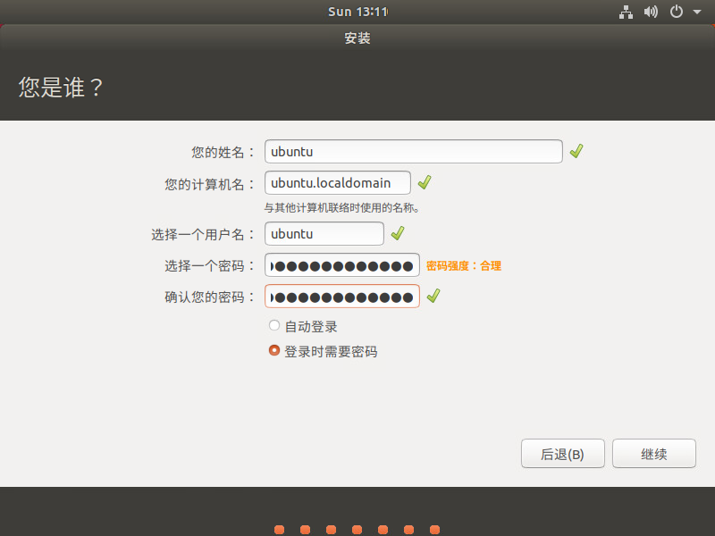
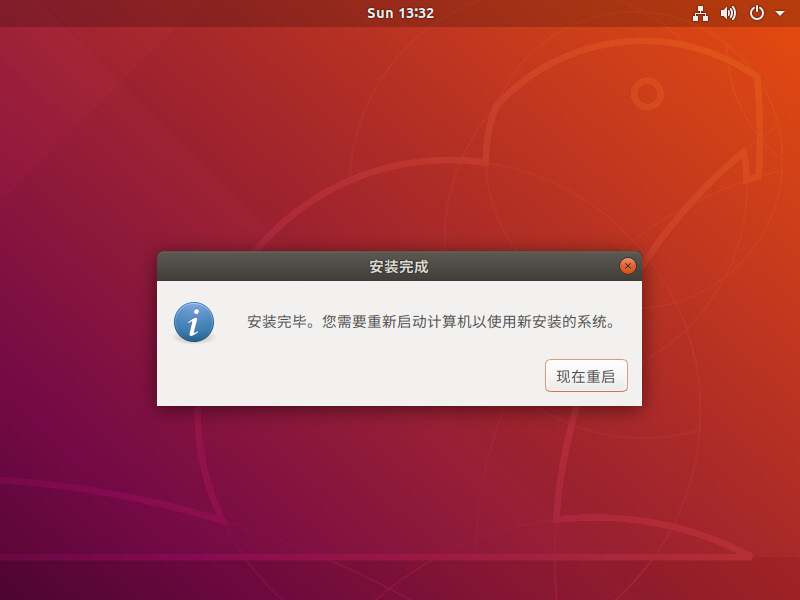

1.3 安装 Ubuntu¶
获取安装介质¶
如果你需要安装Ubuntu，请从官方网站上的列出的镜像网站链接处下载ISO镜像文件。Ubuntu官方网站的URL请参照以下内容：
注解
Ubuntu 的官方网站：https://www.ubuntu.com
Ubuntu的安装与CentOS等RedHat系Linux发行版的安装不同，它是通过复制被压缩的专用读取文件系统SquashFS文件的内容来进行安装的。因此，不需要在安装中选择部署目标，只要从官方网站的【Download】菜单中寻找ISO镜像种类的连接，根据部署目标（也有服务器版本的）选择进行下载。
种类 |
部署目标 |
补充 |
|---|---|---|
台式机 |
使用标准配置安装 |
面向一般用户，通过GUI安装；安装GNOME做桌面环境 |
服务器 |
使用最小配置安装 |
面向服务器用途，通过CUI安装；在安装过程中选择服务器所需软件 |
在本书中，使用“桌面”（Ubuntu Desktop）。下面详细说明使用“ubuntu-18.04-desktop-amd64.iso”的安装过程。
注解
目前 Ubuntu 的版本每六个月更新一次（本书使用的是“18.04”）。另外，要使用“Ubuntu-18.04-desktop”，最低配置需要2GB的内存。其他硬件条件请参考下方URL： https://www.ubuntu.com/download/desktop
安装顺序¶
本书采用系统安装程序提供的默认安装，在每个章节都会提出需要附加的软件包和设置。
注解
需要使用VMware Workstations或Virtual Box在虚拟环境中安装Ubuntu时，请参照本书第十一章。
启动安装程序
从下载的ISO镜像文件中启动安装程序。首先，选择要在安装程序中显示的语言。现在，在安装界面左侧栏中选择【中文（简体）】。
当显示内容为简体中文时，单击【安装Ubuntu】。

选择键盘布局
在键盘布局的界面中，选择当前输入使用的键盘类型。这里选择【中文】。

选择要安装的程序
在【更新和其他软件】的界面中，选择【正常安装】。【正常安装】中包含办公程序包组和其他方便使用的软件。
选择安装类型
在【安装类型】界面中，选择【清除整个磁盘并安装Ubuntu】，然后单击界面右下角的【安装】。
此选择将会自动配置分区。
注解
分区的详细内容，请参照第七章。
当显示“要在磁盘上更改写入吗？”的确认界面时，单击【继续】。

确认时区
如果界面显示“你在什么地方？”，输入地区，单击【继续】。在这里选择地区为【Shanghai】。
设置普通用户
在Ubuntu中root用户是禁止登录的，所以我们创建一个普通用户来进行登录。
在本书中，普通用户的用户名设置为“ubuntu”，有关普通用户设置的详细信息，请参考下方的表格。输入后，点击【继续】。
设置
内容
你的名字
ubuntu
主机名称
ubuntu.localdomain
输入用户名
ubuntu
输入密码
Linuxbasic2019
确认密码
Linuxbasic2019
安装完成
当显示【完成安装】是，界面右下角会显示【现在重启】。单击【现在重启】，重新启动系统。



{kind=link}
{kind=link}
{kind=link}
{kind=link}
{kind=link}
{kind=link}
{kind=link}
{kind=link}